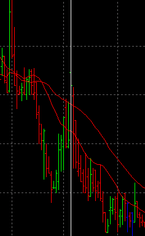
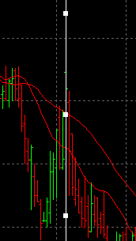
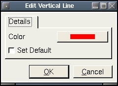

VerticalLine
Description:
A vertical line that extends the height of the chart area.
To create a VerticalLine, select draw mode from the main toolbar and right click with the mouse on the chart you wish to apply it to. This can be either the main chart area or any of the indicators that appear in the indicator chart area. Select "New Chart Object" from the popup menu and select VerticalLine from the menu.
After selecting the menu option, the mouse
pointer will change
to a hand pointer. To place the VerticalLine on the chart the user must
click the left mouse button. The object
will then appear on the chart.
Selecting:
In order to edit the VerticalLine, the user must first select it. First, the user must be in draw mode. Select the VerticalLine by left clicking with the mouse anywhere on the object. The object will be selected when a series of grab boxes appears along the VerticalLine like this:
You then can right click the mouse for a context menu for the object. You may also double-left click on the object to bring up the edit dialog directly. There are three options when a VerticalLine is selected. Edit, Move and Delete.
Edit:
The settings are defined as follows:- Color - The color of the line.
- Set Default - If checked, all settings will default to the current values when new ones are created.
